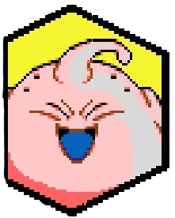
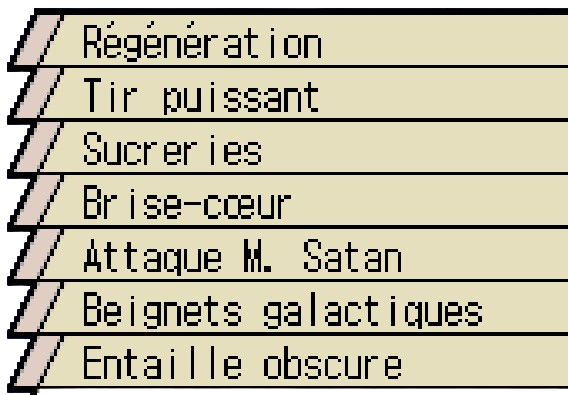
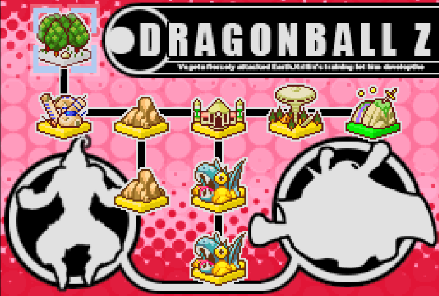
Il était une fois un sorcier maléfique nommé Babidi qui n'avait qu'un seul but: redonner vie à Boo qui a été scellé des milliers d'années auparavant. Pour réussir Babidi décida d'amplifier le mal pour contrôler des guerriers pour qu'ils récoltent de l'énergie pour faire renaître le démon. Un beau jour où il y avait le Tenkaichi Budokai, il jeta son dévolu sur Vegeta et amplifie le mal en lui le faisant devenir Majin Vegeta. Ce dernier alla combattre Goku et leur combat fut tellement intense en énergie que le démon Boo apparut au monde. Vegeta savait que c'était lui qu'il l'a fait renaître, de ce fait il décida que ça soit à lui la tâche de le détruire, mais il savait également que le combat sera très difficile. Boo apparut et tout le monde fut choqué de son apparance: un grand bonhomme rose, rond et gros ressemblant à un grand enfant. Mais en vérité il cache une terrible puissance derrière cette apparence enfantine, et son premier combat après être revenu sera contre Vegeta. Comme on le pensait en vue de la puissance de Boo, Vegeta se fit écrasé et dut se sacrifier en s'explosant, pensant avoir emporté Boo dans la tombe, mais malheuresement la seule victime ne fut que lui-même: Vegeta. Boo s'étant régénéré et recomposé.
Débloque la compétence "Régénération".
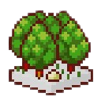
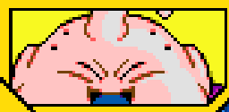

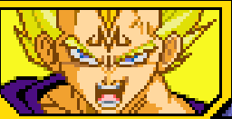
Boo guidé par Babidi, passe à l'action. Obéissant à ses ordres, il change les gens en sucreries et fait régner la terreur sur Terre. D'un simple souffle, Boo détruit une ville entière, alors que tout ce carnage se passait à merveille, Goku apparut sous les yeux de Babidi et Dabra. Goku déclare qu'il est beaucoup plus fort que ce que lui et vegeta pensaient et directement Goku décide d'affronter Boo. Alors que le combat se déroulait bien, Goku et Boo se rendaient coup pour coup et aucun des deux ne semblaient véritablement faiblir, mais Goku décide d'arrêter au grand étonnement de Boo, malheuresement Goku est pressé et doit y aller, alors il s'éclipsa grâce à la transmission instantanée, mais avant il demanda à Boo de pourquoi il écoutait un moins que rien alors qu'il est si fort. Ces paroles firent germer dans la tête de Boo, une idée de rebéllion. Alors que Babidi réprimander Boo pour avoir laisser Goku s'enfuir, Boo fatigué des ordres du sorcier, eut une idée, il prit Babidi et le tua d'un coup. Boo est maintenant libre !!!


N'ayant plus Babidi sur le dos, Boo faisait ce qu'il souhaitait: il détruisait des villes à souhait pour s'amuser et transformer les humains en bonbon pour les manger. Pendant ce temps il construisit une maison pour avoir un endroit fixe et un beau jour, un homme seul vient lui rendre visite, il s'agissait de Mr Satan, le champion du monde de lutte. Ce dernier voulait affronter Boo, mais lorsqu'il a vu le démon, il prit peur et décida de jouer la ruse en le servant, mais au fil du temps, les deux deviennent amis. Soudainement Gotenks arrive pour affronter Boo et un combat commença entre les deux guerriers. Alors que le combat se poursuivait, Boo devint en colère, le mal qui l'habite et sa rage se matérialisèrent sous la forme de Boo (Mauvais) qui en plus d'être purement maléfique, avait prit la majorité de la puissance de Boo. Ce nouveau Boo contrairement à l'original qui est devenu gentil et bon avec le temps, est prêt à répandre le mal partout dans le monde entier et sur Terre
Débloque Boo (mauvais) comme personnage jouable.
Débloque Mr Satan comme personnage de support.
Débloque l'attaque combinée avec Mr Satan "Attaque Mr Satan".
Battre Gotenks avec un Perfect .

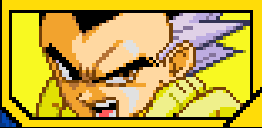
Alors que le combat contre Gotenks se poursuivait Mr Satan intervient et frappe le guerrier mais sans effet, alors qu'un coup allait venir sur le champion, Boo évita cela en frappant Gotenks qui prit la fuite. Après avoir vaincu Gotenks sans trop de difficulté, il continuait de jouer avec Mr Satan comme si de rien n'était, mais Gotenks revient Boo pour un noveau combat, mais sans le vouloir la cuisine de Mr Satan a été touchée, Boo en colère enclencha le combat contre le petit guerrier. Boo gagna le combat et transforma Gotenks en bonbon. Alors que Boo s'apprêtait à le manger et à changer d'autres personnes en sucreries pour calmer sa faim, Mr Satan l'arrêta et lui ordonna calmement de ne pas faire ça car n'étant pas bien et aussitôt Boo arrêta et retransforma Gotenks dans son état initial. Boo et Mr Satan coulaient des jours heureux ensemble, sans le moindre soucis. Sous l'influence de Mr Satan, Boo devint plus doux et gentil au fil du temps, mais il ne suffirait que d'un instant, que d'une étincelle de colère pour que toute cette gentillesse s'efface
Débloque l'Attaque Ultime "Sucreries"

Battre Gotenks avec un Perfect .
A la suite de l'apparition du Boo (Mauvais), les deux Boo se battèrent pour savoir qui est le véritable Boo et malheuresement le mal gagna contre le bien et Boo (Mauvais) mangea le gentil Boo et devint encore plus fort. Maintenant capable de sentir l'énergie, il arriva à pister les guerriers Z dont Piccolo et surtout Gotenks, et toute de suite il se dirige vers le palais de Dendé pour l'affronter. Boo n'étant pas du genre patient, exigea de suite qu'on lui ramène Gotenks, ce que fit Piccolo en essayant de faire gagner du temps aux garçons pour que tout soit prêt. Après l'avoir guidé jusqu'à la Salle de l'Esprit et du Temps, Boo affronta le nouveau Gotenks qui maintenant peut se transformer en Super Saiyan et est bien plus fort, ce qui de toute manière ne faisait rien à Boo dans sa manière de penser qui était de simplement d'affronter des adversaires forts puis de les tuer s'ils étaient trop forts. Voyant que le combat s'éternisait, Piccolo décida de détruire la porte de sortie de la salle, afin que personne ne puisse s'échapper. Boo pensant que c'était la fin pour lui et ses bonbons, dans un hurlement de rage, cria tellement fort qu'il ouvrit une brêche reliant les deux dimensions et donc a put s'échapper.

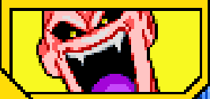
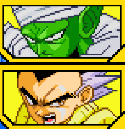
En criant encore plus intensément, Boo ouvra une faille menant directement sur l'Autre Monde, le monde des morts. Là-bas Vegeta et Dabra allaient s'affronter pour combler l'ennui de ce monde, alors que le combat allaient commencer, Boo se joignit à eux. Les deux guerriers morts furent surpris de voir Boo, ironiquement c'était les deux adversaires que Boo avait tué. C'est alors qu'un comabt à 1 contre 2 commença: Boo contre Vegeta et Dabra. Après avoir gagné, Boo demanda à Dabra de l'emmener voir des adversaires plus forts, ce que Dabra accepta. Boo suivit Dabra pour combattre des adversaires à sa mesure.
Débloque Dabra comme personnage de support.

Battre Gotenks avant Piccolo .
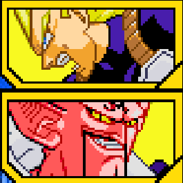
Après avoir gagné face à Vegeta et Dabra, Boo suivant Dabra, l'emmène pour combattre de nouveaux guerriers et à chaque fois, les combattants ne sont pas assez puissants pour tenir tête à Boo, mais le souverain de ce monde ressenti les sombres desseins dans l'esprit de Boo et intervient donc en amenant Cell et Freezer afin de combattre, voyant que les mots ne sont pas d'effets, les poings prendront le relais, on apprend que Cell a prit les rènes des lieux de par sa puissance écrasante, alors que le combat allait commencer, Boo exigea que Dabra se bat également, sans demander son avis, c'est alors qu'un gigantesque combat se mit en place. A la fin du combat aussi bref soit il, Boo en sort épuisé et finit par s'endormir, Cell reporte son attention sur Dabra qui ne mène pas large, finalement Boo trouve ce combat ennuyeux et décide de couper Cell en morceaux avec une seule attaque, ce qui permit à Dabra d'en profiter. Cell fut anéanti par les attaques conjointes de Boo et Dabra. Boo commence à s'ennuyer décide finalement de rentrer chez lui, en ouvrant une nouvelle faille dimensionnelle. la question maintenant est: est ce qu'il arrivera à rentrer chez lui ?
Débloque l'attaque combinée avec Dabra "Entaille obscure".
Débloque l'Attaque Ultime "Brise-coeur"
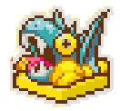
Terminer le combat contre Vegeta et Dabra .
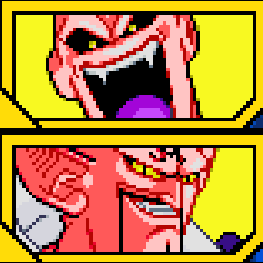
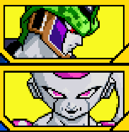
Alors que le combat face à Gotenks poursuivait son cours, Boo sentit l'énergie incroyable de Gohan qui venait de sortir de son entraînement au Kaioshin Kai, il se dirige vers les lieux de l'affrontement pour défaire Boo. Pour faire face à Gohan, Boo décida d'absorber Gotenks et Piccolo, ayant maintenant les deux sont sous contrôle, Boo est confiant face à Gohan et un combat dentesque se lança. Boo avait clairement l'avantage sur Gohan lors du combat et en profita pour absorber un Gohan à bout de souffle qui vient alimenter la puissance démesurée de Boo. Qui peut encore lui faire face à présent ?
Débloque l'attaque combinée avec Gotenks Super Saiyan 3 "Beignets Galactiques"
Débloque la compétence "Tir puissant".

Terminer le combat contre Gotenks et Piccolo.
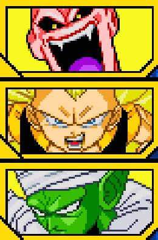
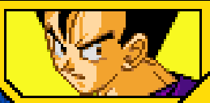
Malgré que Boo ait acquis une puissance incommensurable, il fut ridiculisé par Goku et Vegeta ayant fusionné pour donner Vegetto. Fou de rage Boo mobilise tout sa bestialité et finit par détruire la Terre en un instant. Mais conscient que Goku s'est échappé grâce au déplacement instantané, il le poursuivit jusque dans le monde des Kaioshins. Le seul moyen qu'a trouvé Vegeta et les autres fut pour vaincre Boo était le Genkidama. Vegeta, Boo et Mr Satan permirent à Goku de gagner du temps pour la formation de son Genkidama et après une féroce bataille, avant de l'achever Goku fit le voeu que Boo soit réincarné en une bonne personne afin qu'elle combatte contre Goku. Finalement Boo fut désintégré par le Genkidama . Désormais l'Univers est en paix grâce à Goku, Vegeta, Boo et les terriens. Mais l'esprit de Boo revient sur Terre, dans le corps d'un nouveau guerrier nommé Oob qui participera au prochain Budokai Tenkaichi, là où Goku y sera également...
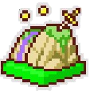
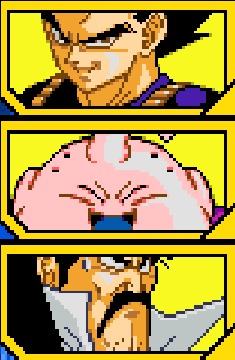